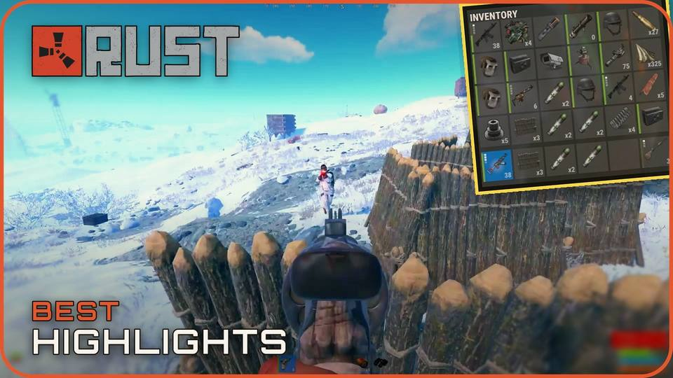
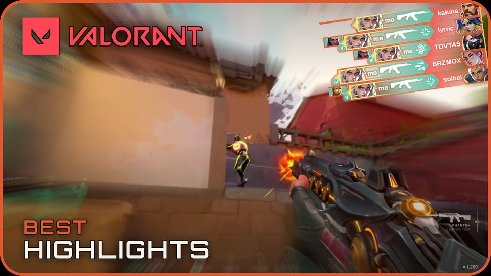

YouTube channel · ClipSurgeGG
My system searches thousands of game clips so I only review the ones worth a look.
It scans gaming streams for short, shareable moments, turns the best candidates into ready-to-post vertical videos, and leaves the final yes or no to me.
That is about 1,000 clips a day. By my rough estimate, my review takes about 30 minutes a day, where finding and editing the same videos by hand would take about 3 hours.
The result
33,365 clips in 32 days; 150 reached my review.
Real people watched, too: the channel drew 47.4K views in its first 28 days live, self-reported from YouTube Studio.
On this page · 5 sections · 4 min read
Why I built it
Find more. Watch less.
Running a gaming clips channel by hand is a grind: hours of streams to scrub through and no quick way to tell which five minutes are worth sharing. I wanted the system to do the digging and leave the judgment, is this moment actually good?, to me.
It searches broadly for channels I'd never think to check and keeps a watchlist of creators I already like. The system prepares; I decide. Every clip that goes out is one I approve.
How it works
Discover → Collect → Narrow → Review → Approve.
What viewers see first
Every video gets a thumbnail drafted from its own best moment.
The system finds the action in each clip, applies the channel's design, and drafts a set of thumbnail options. I pick the one that goes live.




Real thumbnails from the channel. The gameplay comes from the clips each video features; no creator names or faces are shown. Tap one to see it larger.
The audience result
What happened once the channel went live.
In its first 28 days live, the channel's videos drew real viewers. These are self-reported YouTube Studio numbers, kept apart from the production counts above. They show a real audience, not a promise that growth continues.
47.4K
views, first 28 days
304.7
hours watched, first 28 days
1,693
views a day on average
+20
subscribers, first month
What it took to build
Seven parts work together behind those five steps.
01
Finding. Three platforms, 16,479 channels searched, 117 creators on a watchlist.
02
Ranking. Weighs view growth, clip frequency, creator, language, and title keywords.
03
Watching. Picks the moment of action and keeps the streamer's reaction in frame.
04
Assembling. Stitches clips, adds opening and closing cards, and balances the sound.
05
Naming. Drafts titles, descriptions, tags, and a ranked set of thumbnail options.
06
My review. I approve, reject, and pick a thumbnail in one spreadsheet.
07
Posting. Uploads to YouTube and TikTok on a schedule once I approve.
Repetitive digging, not judgment.
The system handles finding, assembling, and routine checks. I still approve clips and choose the thumbnail.
One bad source can't stop the queue.
Errors are logged and skipped, not treated as a failed day: 3,752 so far.
About half an hour instead of an afternoon.
By my rough estimate, about 30 minutes of review a day, versus roughly 3 hours by hand.
Track review and posting in one place.
Review decisions and published videos live in separate records, so the numbers are hard to compare.
Evidence record
Every number on this page, with its source.
Open the full evidence record
This record shows how big the clip pool was, what reached my review, and what was approved or used. Audience numbers come from YouTube Studio and are dated separately. The checked summary stays public; the larger working record remains private.
These counts describe different groups. The 53 approvals, 97 hand-rejections, 150 reviewed, and 1,244 pending add up to the 1,394 clips in my review queue. The 81 clips marked used and the 85 published videos come from separate production records, so they do not line up one-to-one. The 33,284 remainder is every collected clip not marked used (33,365 minus 81), including clips still waiting for review.
The claim
33,365 clips collected; 150 reached my review.
The checks
What I approved or rejected by hand, what is still waiting, and source errors.
The scale
Channels monitored, production days, languages, and the separate publishing record.
117
creators on my watchlist
32
days in the production window
53
approved by hand
33,365
clips collected
81
clips used
64.7%
hand rejection rate
1,244
pending review
1,394
queued for review
33,284
not marked used (includes pending)
99.76% not-used share of harvested clips
3
review languages
0.243%
selection rate
16,479
channels monitored
150
reviewed by me
97
rejected by hand
85
published videos (separate record)
If this sounds useful
Build the review loop.
The same discipline applies well beyond video: narrow with rules, and keep a person on the final call.